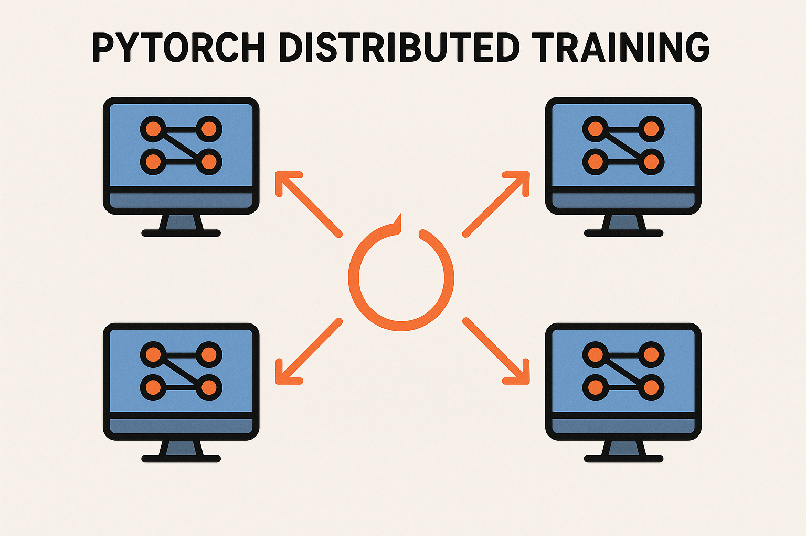

Distributed Training with PyTorch - Complete Code Guide

Table of Contents
Introduction
Distributed training allows you to scale PyTorch models across multiple GPUs and machines, dramatically reducing training time for large models and datasets. This guide covers practical implementation patterns from basic data parallelism to advanced distributed strategies.
Core Concepts
Key Terminology
- World Size: Total number of processes participating in training
- Rank: Unique identifier for each process (0 to world_size-1)
- Local Rank: Process identifier within a single node/machine
- Process Group: Collection of processes that can communicate with each other
- Backend: Communication backend (NCCL for GPU, Gloo for CPU)
Communication Patterns
- All-Reduce: Combine values from all processes and distribute the result
- Broadcast: Send data from one process to all others
- Gather: Collect data from all processes to one process
- Scatter: Distribute data from one process to all others
Setup and Initialization
Basic Environment Setup
import os
import torch
import torch.distributed as dist
import torch.multiprocessing as mp
from torch.nn.parallel import DistributedDataParallel as DDP
from torch.utils.data.distributed import DistributedSampler
def setup_distributed(rank, world_size, backend='nccl'):
"""Initialize distributed training environment"""
os.environ['MASTER_ADDR'] = 'localhost'
os.environ['MASTER_PORT'] = '12355'
# Initialize process group
dist.init_process_group(
backend=backend,
rank=rank,
world_size=world_size
)
# Set device for current process
torch.cuda.set_device(rank)
def cleanup_distributed():
"""Clean up distributed training"""
dist.destroy_process_group()Multi-Node Setup
def setup_multinode(rank, world_size, master_addr, master_port):
"""Setup for multi-node distributed training"""
os.environ['MASTER_ADDR'] = master_addr
os.environ['MASTER_PORT'] = str(master_port)
os.environ['RANK'] = str(rank)
os.environ['WORLD_SIZE'] = str(world_size)
dist.init_process_group(
backend='nccl',
init_method='env://',
rank=rank,
world_size=world_size
)Data Parallel Training
Simple DataParallel (Single Node)
import torch.nn as nn
class SimpleModel(nn.Module):
def __init__(self, input_size, hidden_size, num_classes):
super().__init__()
self.fc1 = nn.Linear(input_size, hidden_size)
self.relu = nn.ReLU()
self.fc2 = nn.Linear(hidden_size, num_classes)
def forward(self, x):
x = self.fc1(x)
x = self.relu(x)
x = self.fc2(x)
return x
def train_dataparallel():
"""Basic DataParallel training"""
device = torch.device("cuda" if torch.cuda.is_available() else "cpu")
# Create model and wrap with DataParallel
model = SimpleModel(784, 256, 10)
if torch.cuda.device_count() > 1:
model = nn.DataParallel(model)
model.to(device)
# Setup optimizer and loss
optimizer = torch.optim.Adam(model.parameters(), lr=0.001)
criterion = nn.CrossEntropyLoss()
# Training loop
for epoch in range(num_epochs):
for batch_idx, (data, target) in enumerate(train_loader):
data, target = data.to(device), target.to(device)
optimizer.zero_grad()
output = model(data)
loss = criterion(output, target)
loss.backward()
optimizer.step()Distributed Data Parallel (DDP)
Basic DDP Implementation
def train_ddp(rank, world_size):
"""Distributed Data Parallel training function"""
# Setup distributed environment
setup_distributed(rank, world_size)
# Create model and move to GPU
model = SimpleModel(784, 256, 10).to(rank)
# Wrap model with DDP
ddp_model = DDP(model, device_ids=[rank])
# Setup distributed sampler
train_sampler = DistributedSampler(
train_dataset,
num_replicas=world_size,
rank=rank,
shuffle=True
)
train_loader = torch.utils.data.DataLoader(
train_dataset,
batch_size=batch_size,
sampler=train_sampler,
num_workers=4,
pin_memory=True
)
# Setup optimizer and loss
optimizer = torch.optim.Adam(ddp_model.parameters(), lr=0.001)
criterion = nn.CrossEntropyLoss()
# Training loop
for epoch in range(num_epochs):
train_sampler.set_epoch(epoch) # Important for shuffling
for batch_idx, (data, target) in enumerate(train_loader):
data, target = data.to(rank), target.to(rank)
optimizer.zero_grad()
output = ddp_model(data)
loss = criterion(output, target)
loss.backward()
optimizer.step()
if rank == 0 and batch_idx % 100 == 0:
print(f'Epoch: {epoch}, Batch: {batch_idx}, Loss: {loss.item():.4f}')
cleanup_distributed()
def main():
"""Main function to spawn distributed processes"""
world_size = torch.cuda.device_count()
mp.spawn(train_ddp, args=(world_size,), nprocs=world_size, join=True)
if __name__ == "__main__":
main()Complete Training Script with Validation
import time
from torch.utils.tensorboard import SummaryWriter
class DistributedTrainer:
def __init__(self, model, rank, world_size, train_loader, val_loader=None):
self.model = model
self.rank = rank
self.world_size = world_size
self.train_loader = train_loader
self.val_loader = val_loader
# Setup DDP
self.ddp_model = DDP(model, device_ids=[rank])
# Setup optimizer and scheduler
self.optimizer = torch.optim.AdamW(
self.ddp_model.parameters(),
lr=0.001,
weight_decay=0.01
)
self.scheduler = torch.optim.lr_scheduler.CosineAnnealingLR(
self.optimizer, T_max=100
)
self.criterion = nn.CrossEntropyLoss()
# Logging (only on rank 0)
if rank == 0:
self.writer = SummaryWriter('runs/distributed_training')
def train_epoch(self, epoch):
"""Train for one epoch"""
self.ddp_model.train()
total_loss = 0
num_batches = 0
for batch_idx, (data, target) in enumerate(self.train_loader):
data, target = data.to(self.rank), target.to(self.rank)
self.optimizer.zero_grad()
output = self.ddp_model(data)
loss = self.criterion(output, target)
loss.backward()
# Gradient clipping
torch.nn.utils.clip_grad_norm_(self.ddp_model.parameters(), max_norm=1.0)
self.optimizer.step()
total_loss += loss.item()
num_batches += 1
if self.rank == 0 and batch_idx % 100 == 0:
print(f'Epoch: {epoch}, Batch: {batch_idx}, Loss: {loss.item():.4f}')
avg_loss = total_loss / num_batches
return avg_loss
def validate(self):
"""Validate the model"""
if self.val_loader is None:
return None
self.ddp_model.eval()
total_loss = 0
correct = 0
total = 0
with torch.no_grad():
for data, target in self.val_loader:
data, target = data.to(self.rank), target.to(self.rank)
output = self.ddp_model(data)
loss = self.criterion(output, target)
total_loss += loss.item()
pred = output.argmax(dim=1)
correct += pred.eq(target).sum().item()
total += target.size(0)
# Gather metrics from all processes
total_loss_tensor = torch.tensor(total_loss).to(self.rank)
correct_tensor = torch.tensor(correct).to(self.rank)
total_tensor = torch.tensor(total).to(self.rank)
dist.all_reduce(total_loss_tensor, op=dist.ReduceOp.SUM)
dist.all_reduce(correct_tensor, op=dist.ReduceOp.SUM)
dist.all_reduce(total_tensor, op=dist.ReduceOp.SUM)
avg_loss = total_loss_tensor.item() / self.world_size
accuracy = correct_tensor.item() / total_tensor.item()
return avg_loss, accuracy
def save_checkpoint(self, epoch, loss):
"""Save model checkpoint (only on rank 0)"""
if self.rank == 0:
checkpoint = {
'epoch': epoch,
'model_state_dict': self.ddp_model.module.state_dict(),
'optimizer_state_dict': self.optimizer.state_dict(),
'scheduler_state_dict': self.scheduler.state_dict(),
'loss': loss,
}
torch.save(checkpoint, f'checkpoint_epoch_{epoch}.pth')
def train(self, num_epochs):
"""Complete training loop"""
for epoch in range(num_epochs):
start_time = time.time()
# Set epoch for distributed sampler
if hasattr(self.train_loader.sampler, 'set_epoch'):
self.train_loader.sampler.set_epoch(epoch)
# Train
train_loss = self.train_epoch(epoch)
# Validate
val_metrics = self.validate()
# Step scheduler
self.scheduler.step()
# Logging and checkpointing (rank 0 only)
if self.rank == 0:
epoch_time = time.time() - start_time
print(f'Epoch {epoch}: Train Loss: {train_loss:.4f}, '
f'Time: {epoch_time:.2f}s')
if val_metrics:
val_loss, val_acc = val_metrics
print(f'Val Loss: {val_loss:.4f}, Val Acc: {val_acc:.4f}')
# TensorBoard logging
self.writer.add_scalar('Loss/Train', train_loss, epoch)
self.writer.add_scalar('Loss/Val', val_loss, epoch)
self.writer.add_scalar('Accuracy/Val', val_acc, epoch)
# Save checkpoint
if epoch % 10 == 0:
self.save_checkpoint(epoch, train_loss)Advanced Patterns
Mixed Precision Training
from torch.cuda.amp import GradScaler, autocast
class MixedPrecisionTrainer(DistributedTrainer):
def __init__(self, *args, **kwargs):
super().__init__(*args, **kwargs)
self.scaler = GradScaler()
def train_epoch(self, epoch):
"""Train with mixed precision"""
self.ddp_model.train()
total_loss = 0
num_batches = 0
for batch_idx, (data, target) in enumerate(self.train_loader):
data, target = data.to(self.rank), target.to(self.rank)
self.optimizer.zero_grad()
# Forward pass with autocast
with autocast():
output = self.ddp_model(data)
loss = self.criterion(output, target)
# Backward pass with scaled gradients
self.scaler.scale(loss).backward()
# Gradient clipping with scaled gradients
self.scaler.unscale_(self.optimizer)
torch.nn.utils.clip_grad_norm_(self.ddp_model.parameters(), max_norm=1.0)
# Optimizer step with scaler
self.scaler.step(self.optimizer)
self.scaler.update()
total_loss += loss.item()
num_batches += 1
return total_loss / num_batchesModel Sharding with FSDP
from torch.distributed.fsdp import FullyShardedDataParallel as FSDP
from torch.distributed.fsdp.wrap import size_based_auto_wrap_policy
def create_fsdp_model(model, rank):
"""Create FSDP wrapped model"""
wrap_policy = size_based_auto_wrap_policy(min_num_params=100000)
fsdp_model = FSDP(
model,
auto_wrap_policy=wrap_policy,
mixed_precision=torch.distributed.fsdp.MixedPrecision(
param_dtype=torch.float16,
reduce_dtype=torch.float16,
buffer_dtype=torch.float16
),
device_id=rank,
sync_module_states=True,
sharding_strategy=torch.distributed.fsdp.ShardingStrategy.FULL_SHARD
)
return fsdp_modelPipeline Parallelism
import torch.distributed.pipeline.sync as Pipe
class PipelineModel(nn.Module):
def __init__(self, layers_per_partition=2):
super().__init__()
# Define layers
layers = []
layers.append(nn.Linear(784, 512))
layers.append(nn.ReLU())
layers.append(nn.Linear(512, 256))
layers.append(nn.ReLU())
layers.append(nn.Linear(256, 128))
layers.append(nn.ReLU())
layers.append(nn.Linear(128, 10))
# Create pipeline
self.pipe = Pipe.Pipe(
nn.Sequential(*layers),
balance=[layers_per_partition] * (len(layers) // layers_per_partition),
devices=[0, 1], # GPU devices
chunks=8 # Number of micro-batches
)
def forward(self, x):
return self.pipe(x)Monitoring and Debugging
Performance Profiling
import torch.profiler
def profile_training(trainer, num_steps=100):
"""Profile distributed training performance"""
with torch.profiler.profile(
activities=[
torch.profiler.ProfilerActivity.CPU,
torch.profiler.ProfilerActivity.CUDA,
],
schedule=torch.profiler.schedule(wait=1, warmup=1, active=3, repeat=2),
on_trace_ready=torch.profiler.tensorboard_trace_handler('./log/profiler'),
record_shapes=True,
profile_memory=True,
with_stack=True
) as prof:
for step, (data, target) in enumerate(trainer.train_loader):
if step >= num_steps:
break
data, target = data.to(trainer.rank), target.to(trainer.rank)
trainer.optimizer.zero_grad()
output = trainer.ddp_model(data)
loss = trainer.criterion(output, target)
loss.backward()
trainer.optimizer.step()
prof.step()Communication Debugging
def debug_communication():
"""Debug distributed communication"""
rank = dist.get_rank()
world_size = dist.get_world_size()
# Test all-reduce
tensor = torch.randn(10).cuda()
print(f"Rank {rank}: Before all-reduce: {tensor.sum().item():.4f}")
dist.all_reduce(tensor, op=dist.ReduceOp.SUM)
print(f"Rank {rank}: After all-reduce: {tensor.sum().item():.4f}")
# Test broadcast
if rank == 0:
broadcast_tensor = torch.randn(5).cuda()
else:
broadcast_tensor = torch.zeros(5).cuda()
dist.broadcast(broadcast_tensor, src=0)
print(f"Rank {rank}: Broadcast result: {broadcast_tensor.sum().item():.4f}")Best Practices
1. Data Loading Optimization
def create_efficient_dataloader(dataset, batch_size, world_size, rank):
"""Create optimized distributed data loader"""
sampler = DistributedSampler(
dataset,
num_replicas=world_size,
rank=rank,
shuffle=True,
drop_last=True # Ensures consistent batch sizes
)
loader = torch.utils.data.DataLoader(
dataset,
batch_size=batch_size,
sampler=sampler,
num_workers=4, # Adjust based on system
pin_memory=True,
persistent_workers=True, # Reuse worker processes
prefetch_factor=2
)
return loader2. Gradient Synchronization
def train_with_gradient_accumulation(model, optimizer, criterion, data_loader,
accumulation_steps=4):
"""Training with gradient accumulation"""
model.train()
for batch_idx, (data, target) in enumerate(data_loader):
data, target = data.cuda(), target.cuda()
# Forward pass
output = model(data)
loss = criterion(output, target) / accumulation_steps
# Backward pass
loss.backward()
# Update parameters every accumulation_steps
if (batch_idx + 1) % accumulation_steps == 0:
optimizer.step()
optimizer.zero_grad()3. Dynamic Loss Scaling
class DynamicLossScaler:
def __init__(self, init_scale=2.**16, scale_factor=2., scale_window=2000):
self.scale = init_scale
self.scale_factor = scale_factor
self.scale_window = scale_window
self.counter = 0
def update(self, overflow):
if overflow:
self.scale /= self.scale_factor
self.counter = 0
else:
self.counter += 1
if self.counter >= self.scale_window:
self.scale *= self.scale_factor
self.counter = 04. Launch Script Example
#!/bin/bash
# launch_distributed.sh
# Single node, multiple GPUs
python -m torch.distributed.launch \
--nproc_per_node=4 \
--nnodes=1 \
--node_rank=0 \
--master_addr="localhost" \
--master_port=12345 \
train_distributed.py
# Multi-node setup
# Node 0:
python -m torch.distributed.launch \
--nproc_per_node=4 \
--nnodes=2 \
--node_rank=0 \
--master_addr="192.168.1.100" \
--master_port=12345 \
train_distributed.py
# Node 1:
python -m torch.distributed.launch \
--nproc_per_node=4 \
--nnodes=2 \
--node_rank=1 \
--master_addr="192.168.1.100" \
--master_port=12345 \
train_distributed.py5. Error Handling and Recovery
def robust_train_loop(trainer, num_epochs, checkpoint_dir):
"""Training loop with error handling and recovery"""
start_epoch = 0
# Load checkpoint if exists
latest_checkpoint = find_latest_checkpoint(checkpoint_dir)
if latest_checkpoint:
start_epoch = load_checkpoint(trainer, latest_checkpoint)
for epoch in range(start_epoch, num_epochs):
try:
trainer.train_epoch(epoch)
# Save checkpoint
if epoch % 5 == 0:
save_checkpoint(trainer, epoch, checkpoint_dir)
except RuntimeError as e:
if "out of memory" in str(e):
print(f"OOM error at epoch {epoch}, reducing batch size")
# Implement batch size reduction logic
torch.cuda.empty_cache()
continue
else:
raise e
except Exception as e:
print(f"Error at epoch {epoch}: {e}")
# Save emergency checkpoint
save_checkpoint(trainer, epoch, checkpoint_dir, emergency=True)
raise eThis guide provides a comprehensive foundation for implementing distributed training with PyTorch. Start with basic DDP for single-node multi-GPU setups, then progress to more advanced techniques like FSDP and pipeline parallelism as your models and datasets grow larger.